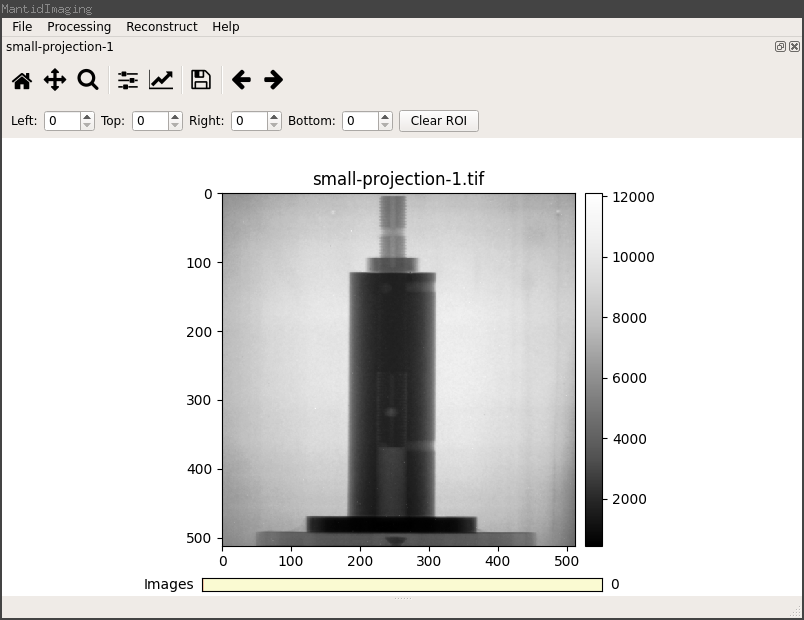
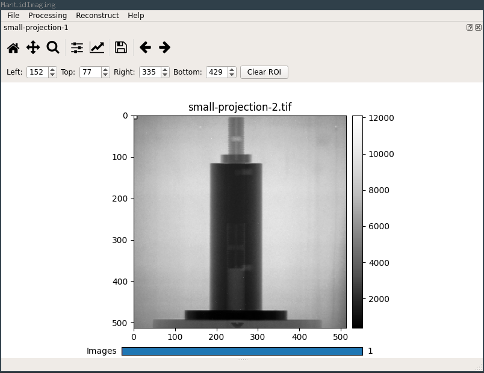
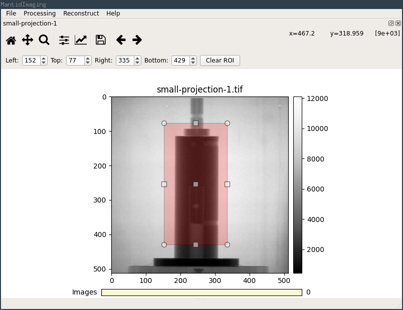
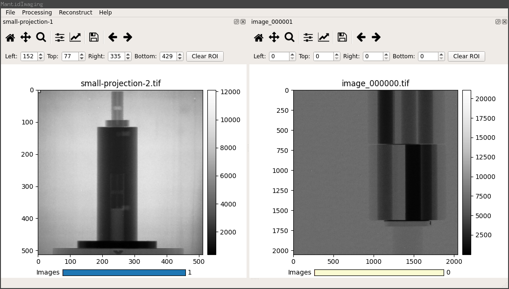
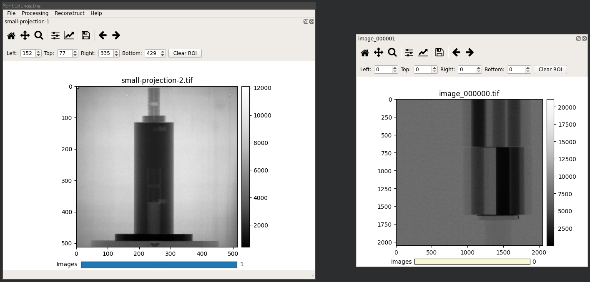

Stack Visualiser¶
The stack visualiser is the main way to view loaded images in the GUI.
Stack visualiser windows are created automatically when data is loaded or produced by an operation (e.g. volume reconstruction).
This screenshot shows a single stack visualiser docked inside the main window after loading a small image stack:
{kind=link}
The first 6 buttons on the toolbar are standard Matplotlib tools; reset view, pan, zoom, canvas layout, axes options and save plot. The last two arrow buttons can be used to scroll through the image stack.
You can also scroll through the stack using the mouse wheel or the Images slider at the bottom of the window.
{kind=link}
A Region of Interest (ROI) can be selected by clicking and dragging on the image or by entering values in the ROI toolbar.
{kind=link}
When additional image stacks are loaded the additional stack visualisers are docked into the main window along with any existing stacks.
{kind=link}
The main window can hold as many stack visualisers as required which can be docked side by side, in tabs or floating (as shown in the screenshot below). Stack visualisers are moved and docked using the title bar above the Matplotlib toolbar.
{kind=link}
Right clicking on the image in a stack visualiser opens a context menu which allows plotting the intensity histogram and switching between stack and sum modes.
In stack mode each image is displayed individually and the images in the stack can be scrolled through normally.
In sum mode the normalised sum of each image is displayed. This mode is useful for selecting a region of interest that definitely covers the entire sample or a region that is definitely an air region in all images.